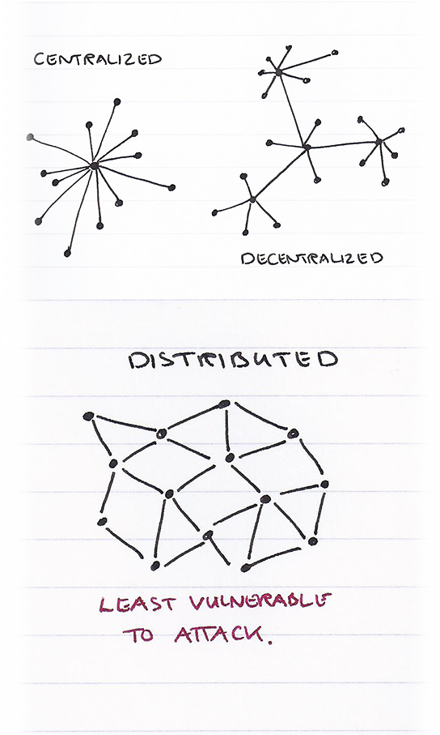

Think of a blockchain database as a record book that keeps track of every
transaction made within a network. As new transactions occur, they are
validated and then added to the record book.
So far that just sounds like any other database, right? Well, what makes
Blockchain so revolutionary is that it’s distributed. When a change is
made, it’s communicated to the rest of the network so that every
participant has a copy of the most up-to-date record book.
This makes it a very secure and trustworthy system, without the need for
a middleman with singular authority over the database.
By being completely distributed and transparent, blockchain databases create
trust in a trestles environment.